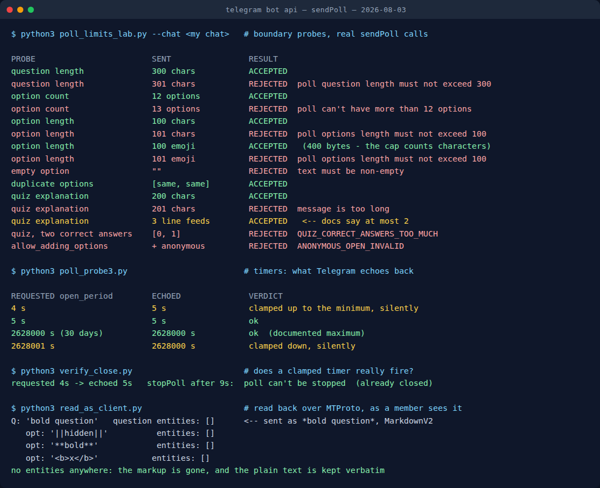

I Tested Telegram's Poll Limits: What Breaks a Quiz Night
A game night in a group chat lives or dies on polls. They are the only mechanic Telegram gives you where twelve people can answer at once without the first reply telling everyone else what to think. Every round I have ever run — who is lying, which answer is right, who gets the dare — ends in a poll.
So it is worth knowing exactly where a poll stops working. Not the theory: the point where the API says no, and the more annoying point where it says yes and quietly does something else. I spent an evening sending deliberately-broken polls at Telegram until it complained, then read every poll back a second way to see what a person in the chat would actually get.
Some of it matches the official sendPoll reference. Three things do not, and one of those three has silently ruined a round for me before I understood it.

How I tested it
Three passes, because one was not enough to catch my own mistakes.
The first pass sends polls at the boundary of every documented limit — a 300-character question and a 301-character one, twelve options and thirteen, and so on — and records the exact accept or reject. The second pass re-sends the interesting cases and reads what Telegram echoes back in the response, because "accepted" and "sent as I asked" turn out to be different things. The third pass reads the same polls back over the client protocol with a normal user account, which is the closest I can get to seeing what a member of the group sees without asking anyone to look over my shoulder.
That third pass exists because of a habit I had to learn the hard way: an exit code of zero tells you the request left the building, not that the thing arrived intact.
The hard walls
These are the limits that produce a clean, immediate error. You will never hit them by accident with a short question, and you will hit all of them the moment you paste in something you wrote in a document.
| What | Limit | What happens past it |
|---|---|---|
| Question | 300 characters | poll question length must not exceed 300 |
| Options per poll | 12 | poll can't have more than 12 options |
| Text per option | 100 characters | poll options length must not exceed 100 |
| Quiz explanation | 200 characters | message is too long |
| Empty option | not allowed | text must be non-empty |
| Two identical options | allowed | accepted without complaint |
Twelve is the number that shapes a game night more than any other. A round where everybody votes for a person — who is most likely to lose their phone, who is bluffing — caps out at a group of twelve, because each player needs their own option. Past that you are splitting the room into two polls and reconciling the counts by hand, which is exactly as fun as it sounds. If your group runs bigger than twelve, design the round as a vote on answers, not on people.
One hundred characters per option sounds generous until you write a Would You Rather. "Always have to say everything on your mind out loud, even in meetings" is 70. The version with the funny qualifier on the end is 118, and it is refused. The workaround is not to shorten the joke — it is to put the full text in the message above the poll and keep the options to the two short labels people are choosing between.
The character cap counts characters, not bytes
This one I expected to go the other way. An option of 100 dice emoji is 400 bytes on the wire, and it is accepted. One hundred and one of them is refused with the same error as 101 letters.
So the cap is counted in characters as a person would count them, not in the storage a string takes up. That matters for anyone writing prompts with emoji in them, and doubly for anyone writing them in a language whose characters are multi-byte by default — a Ukrainian or Greek option gets the same 100 characters as an English one, not half as many. The Unicode consortium's own FAQ is the reference for why those two counts differ so much in the first place.
Timers get rounded, not refused
Here is the behaviour that costs you a round. A poll can carry a countdown — open_period — and the allowed range is 5 seconds to 2,628,000 seconds, which is 30 days.
Send something outside that range and Telegram does not reject it. It silently rounds it into range and tells you nothing:
- Ask for a 4-second timer, get 5 seconds.
- Ask for 2,628,001 seconds, get 2,628,000.
The response comes back ok: true with the corrected number sitting in it, which is easy to miss if you are only checking that the call succeeded. And the corrected timer is real: I sent a poll asking for 4 seconds, waited nine, and tried to close it manually. Telegram refused — poll can't be stopped — because it had already closed itself on schedule.
The same forgiving-to-a-fault behaviour shows up in a second place. The documentation says open_period and close_date cannot be used together. Send both anyway and the request is accepted; the open_period wins and the close_date you specified is overwritten. I asked for a 60-second timer and a close time ten minutes out, and got a poll that closed in 60 seconds.
There is no bold, no italics and no spoiler inside a poll
Poll options carry no formatting at all. Not "limited formatting" — none. I sent three options containing a spoiler tag, a bold marker and an HTML bold tag, then read the poll back over the client protocol. All three came back as literal text, with an empty entity list on every one of them.
The question field is only slightly better: it accepts a parse mode, but the reference restricts it to custom emoji entities. I sent a question as MarkdownV2 bold; the asterisks were consumed and the text arrived plain, with no bold and no entities. Not an error — just quietly unformatted.
For a game night this rules out the trick everyone reaches for first: hiding the answer behind a spoiler tag inside the poll. ||like this|| in an option is displayed exactly as those characters, answer and all. What works instead is a two-part round — the hidden text goes in a normal message, where spoiler formatting is fully supported, and the poll below it carries only the plain-text choices. It is one extra message and it is the difference between a reveal and a leak.
Quiz mode: one correct answer, whatever the field name suggests
Quiz polls — the mode Telegram introduced with Polls 2.0 — mark one option right and can show an explanation when someone picks wrong. The parameter is now named in the plural, correct_option_ids, which reads like an invitation to mark two answers correct.
It is not. Passing two ids is refused with QUIZ_CORRECT_ANSWERS_TOO_MUCH. The older singular parameter still works and comes back echoed in both the singular and plural fields, so nothing you already wrote is broken — but a quiz round with two acceptable answers has to be built as two separate questions.
Two smaller findings from the same pass. A quiz without a correct answer is refused outright (correct quiz option list must be non-empty), so you cannot use quiz mode purely for its nicer layout. And the explanation is documented as allowing at most two line breaks — I sent three and it was accepted, which is the one place the API turned out to be more permissive than its own description rather than less.
Four switches worth knowing before your next round
While checking the limits I went through the full parameter list, and a few of the newer ones solve group-chat problems I had been solving by hand:
hide_results_until_closes— nobody sees the tally until the poll closes. This is the native fix for the single biggest problem with voting in a group: the first three votes anchor everyone who comes later.shuffle_options— each person sees the options in a different order, which kills "the answer is always the long one" pattern-matching in a quiz.allows_revoting— on by default for regular polls, off by default for quizzes. If your round is scored, turn it off explicitly and stop arguing about who changed their vote.allow_adding_options— lets players add their own answers, which is a genuinely good "make up a lie" round. It refuses to work on an anonymous poll: pair it with public voting or you getANONYMOUS_OPEN_INVALID.
An honest caveat on the first two: Telegram accepts both flags, but neither appears in the poll object it sends back, and neither showed up when I read the poll over the client protocol either. So I can confirm they are accepted — I cannot confirm from the response alone that they took effect. Set them, then look at the poll in the chat before you build a round around them.
Want the run sheet instead of the API?
The free Telegram Game Night Planner builds a timed game night as paste-ready blocks — rounds, host lines, and poll questions with the options already separated so you can send them straight into a group chat. No signup, runs in your browser.
Build a game night → Everything above is baked into the blocks it gives you — short options, plain text, no spoiler tags where they will not render.What I actually changed after this
Four rules, all of them the direct consequence of a probe above:
- Options stay short and plain. The long version of the prompt goes in the message; the poll gets the two or three word labels. This sidesteps the 100-character wall entirely and reads better on a phone.
- Nothing hidden ever goes in an option. Spoilers live in a normal message above the poll, because inside one they are just punctuation.
- Twelve is the room size for person-voting rounds. Bigger group, different round design — vote on the answer, not the player.
- Read back the timer. If a round is timed, use the number Telegram returns, not the one that was sent. It is the only way to notice a clamp.
None of this is exotic. It is the difference between a round that lands and a round where somebody says "wait, I can see the answer" — which, in a group chat, is the whole game.
Building the bot that sends these polls?
Telegram in Production ships the limits above as working code: check_poll and build_poll raise on the hard walls and on the three payloads Telegram accepts and then quietly rewrites, which are the ones that bite in production. With it come an initData validator that survives Bot API 8.0 (Python and Node), a systemd unit linter for the two failure modes that cost me weeks of silent breakage, and a one-page pre-ship checklist. 55 tests, no dependencies, runnable straight from the zip.
FAQ
How many options can a Telegram poll have?
Twelve. The thirteenth is refused with "poll can't have more than 12 options". A single-option poll is also accepted, which is occasionally useful as a one-button prompt. For any round where each player needs their own option, twelve is your real group-size cap.
How long can a poll option be?
100 characters per option, 300 for the question, 200 for a quiz explanation. The count is per character, not per byte — 100 emoji weigh 400 bytes and still pass, while 101 of anything fails.
Can I use bold or a spoiler in a poll?
No. Options carry no formatting entities at all, so markup appears verbatim. The question accepts a parse mode but only for custom emoji — bold sent as MarkdownV2 arrives stripped. Put hidden text in a regular message and use the poll only for the vote.
How long can a poll stay open?
From 5 seconds to 30 days. Anything outside that is rounded into range without an error, so a 4-second timer quietly becomes 5. Sending an open_period and a close_date together is also accepted despite the documentation, and the open_period is the one that wins.
Related reading
- The best Telegram party games in 2026 — the rounds these polls are actually for.
- How to run a Telegram game night — the host side: pacing, pinned rules, and keeping a round readable when replies land out of order.
- 13 Telegram bots on a $4.17 VPS — if you would rather have a bot send these polls for you, here is what that costs to host.
- I forged Telegram Mini App initData — the other half of building on this API: what your backend can safely believe about the person sending the vote.
- Why a Telegram game bot freezes mid-round — the per-chat rate limit measured: ~100 operations, then a flood wait of 8–12 s.
- Anonymous Telegram bots: I tested 11, only 4 work — the same liveness method applied to the anonymous-messaging lists, including the three this blog used to recommend.